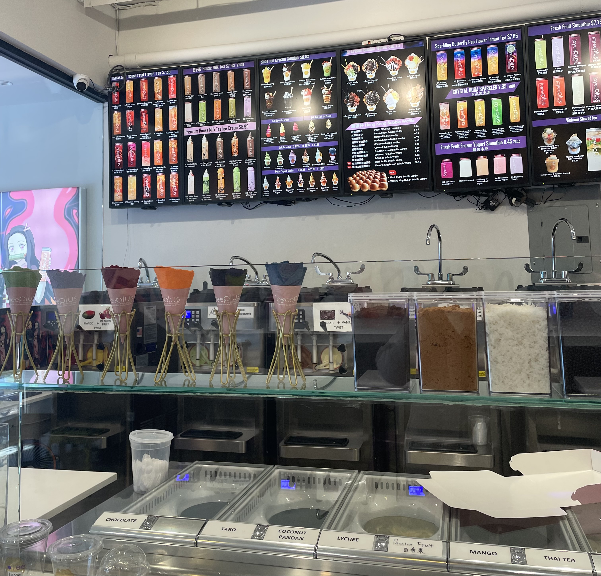
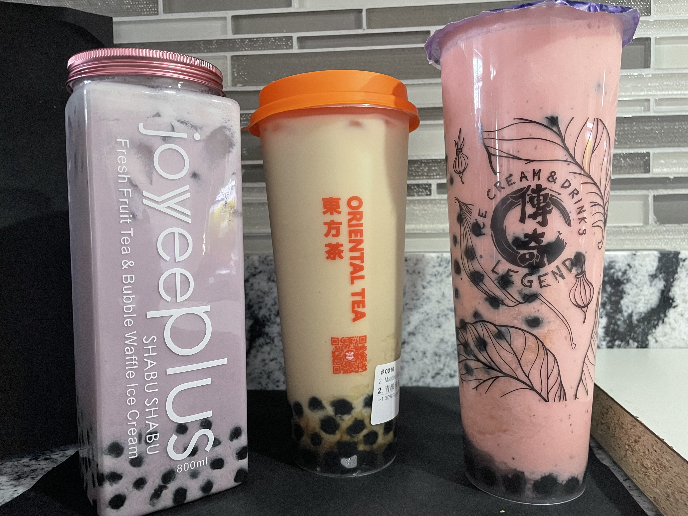

When I was a child, I wandered the streets of Chicago's Chinatown with my grandmother. Back then, I didn't really notice or recollect the milk tea or boba tea stores... but now, there's quite a few along the streets of Old Chinatown. Several of these milk tea shops are located near Chinatown's gate, decorated with mascots or eye-catching designs. As a child, seeing these bright and pretty colors certainly would have had me drag my grandmother into these stores – but they didn't really exist in this capacity when I was young.

The stores all have this power to draw you in with their colorful designs. Some sell more common drinks, like milkshakes or smoothies, and others have unique desserts, but their main selling point always leads back to the milk tea. But what makes milk tea so popular? Personally, I love milk tea, but the ones made in stores are a bit too sweet for my liking. I like it more when I can taste the subtle sweetness of milk, along with the rich and heavy tea, so I tend to make it at home to my own desired proportions. However, I do have to say that making tapioca by hand is beyond me – so you could always opt for the pre-made “just cook it” stuff.
"I've never made it myself, unless you count the pre-packaged stuff," my cousin replied, when I asked if he'd made milk tea from scratch before.
"Matcha with lychee jelly is my go-to now,” my cousin said, who drinks milk tea more often than soda, “but I'm open to try many of the new flavors.”
For boba tea though, this means you may find a specific shop with very specific flavor profiles, while another shop may not have the same variety. People may tend to frequent specific stores for a drink that they prefer. Unlike some other cafes owned by larger corporations that tend to look for a “universal” recipe, each boba tea store has a slightly different recipe or mix, albeit with similar ingredients. This might mean that the first store you walk in just doesn't have the right milk tea for you, or the flavors you may be interested in trying. New stores pop up all the time, often accompanied with many customers and discounts/coupons/deals with their opening.

For me, it took me a little bit of testing around Chinatown to find that certain stores have a powdery taro, while others put in frozen taro, which drastically changes the drink. Powdery taro doesn't fully dissolve sometimes, and I am left walking away with a drink that is a bit gritty and starchy – so I look for stores that have what I'd consider my perfect recipe.

Boba tea has grown to become accessible almost anywhere, from vending machines to pre-made mixes in stores. Both of which I have tried before, with varying levels of acceptance. Unfortunately, pre-made drinks mean you can't tailor it to your preferences (for me, sweetness). While the general recipes remain similar, new stores allow for new experiences – so if a drink doesn't suit you, you could always try another. Similar to coffee, your experience may vary wildly if you try it by someone who makes it differently. Whether it's the different type of tea leaves, the time they steeped it, the ratio of ingredients, or the various flavors, each shop offers a different opportunity for a vastly different flavor.
Now as I wander the streets of Chicago's Chinatown, I can't help but notice and look at all the various shops that keep changing – every time one store closes, another opens... and there's a high chance it'll be a store that sells boba tea.